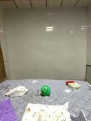
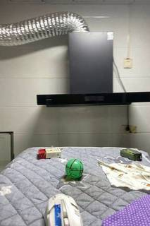

To determine what is to the left of the green ball from the viewpoint in Image 1, we can analyze the spatial layout of the room by identifying the landmarks in each image.
-
Analyze the Landmarks:
- Image 1: The camera is facing a wall with a range hood (which can be translated as a "smoking machine" or "smoke extractor").
- Image 2: The camera is facing a window.
- Image 3: The camera is facing a cardboard-covered sliding door.
- Image 4: The camera is facing a plain white wall.
-
Determine the Spatial Relationship: Assuming these four images represent views from the center of the room facing the four cardinal directions (North, West, South, East):
- Image 1 (North): Facing the range hood.
- Image 2 (West): Facing the window.
- Image 3 (South): Facing the cardboard-covered sliding door.
- Image 4 (East): Facing the plain white wall.
-
Identify the Direction "Left" from Image 1: From the viewpoint of Image 1 (facing North), the direction to the left is West. Based on our analysis, the landmark in the West direction is the window (as seen in Image 2).
-
Evaluate the Options:
- A. Smoking machine: This refers to the range hood, which is directly in front of the ball in Image 1.
- B. Cardboard-covered sliding door: This is behind the ball from the viewpoint of Image 1 (seen in Image 3).
- C. Wall: The plain white wall is to the right of the ball from the viewpoint of Image 1 (seen in Image 4).
- D. Window: The window is to the left of the ball from the viewpoint of Image 1 (seen in Image 2).
Conclusion: From the viewpoint presented in Image 1, the window is to the left of the green ball.
D
ReturnAnswer("D. Window")
[ReturnAnswer] Answer submitted: D. Window
Task Analysis The objective is to identify which of the four given options (Smoking machine, Cardboard-covered sliding door, Wall, Window) is located to the left of the "green ball" from the perspective of the camera in Image 1.
- Target Variable: The object situated to the left of the green ball.
- Reference Frame: Camera-relative 3D space of Image 1. "Left" is defined relative to the camera's right-axis in the first image.
- Answer Format: A single option letter and text (e.g., "A. Smoking machine").
Information Needs
- Object Identification: Accurate segmentation masks for the green ball and the four candidate objects in Image 1.
- 3D Geometry: 3D world coordinates for the centroids of the green ball and the candidates.
- Camera Pose: The extrinsic matrix (camera-to-world) for Image 1 to define the "right" and "left" vectors in world space.
- Spatial Layout: A top-down (BEV) view to visually cross-validate the computed relative positions.
Computation Plan
-
Visual Grounding:
show(InputImages[0])to identify the green ball and candidates.- Use
tools.SAM3.segment_image_by_text(InputImages[0], "green ball")to obtain the mask for the ball. - For the candidates ("smoking machine", "cardboard-covered sliding door", "wall", "window"), use
vlm.locateto get bounding boxes in Image 1, thentools.SAM3.segment_image_by_boxto get precise masks.
-
3D Reconstruction:
recon = tools.Reconstruct.Reconstruct(InputImages)to build the 3D scene using all four available viewpoints.
-
Quantitative Spatial Analysis:
- Get the 3D centroid of the green ball:
ball_3d = seg_ball.get_centroid_3d(recon, frame=InputImages.frame_indices[0], object=0). - Get the 3D centroids of the candidates using their respective masks and the same frame index.
- Extract the camera pose for Image 1:
pose = recon.extrinsics[InputImages.frame_indices[0]]. - Define the camera's right vector:
cam_right = pose[:3, 0]. - For each candidate object:
- Compute the relative vector:
vec_to_obj = obj_3d - ball_3d. - Compute the dot product:
dot_right = np.dot(vec_to_obj, cam_right). - If
dot_right < 0, the object is to the left of the ball from the camera's perspective.
- Compute the relative vector:
- Get the 3D centroid of the green ball:
-
Visual Verification:
recon.render_bev(masks=all_segs)to generate a top-down map.- Verify that the object identified by the dot product is indeed to the left of the ball in the BEV, keeping in mind the orientation of the first camera.
Verification Checklist
CHECKLIST
[
{"priority": "HIGH", "description": "Verify that the 'green ball' mask accurately covers the object in Image 1"},
{"priority": "HIGH", "description": "Ensure the correct camera pose (Image 1) is used to define the 'left' direction"},
{"priority": "MEDIUM", "description": "Cross-validate the dot-product result with the BEV rendering"},
{"priority": "MEDIUM", "description": "Confirm that the candidates (e.g., sliding door, smoking machine) are correctly identified and segmented"},
{"priority": "LOW", "description": "Check for any depth anomalies in the reconstruction that might skew centroid calculations"}
]
Fallbacks
- If
tools.SAM3fails to segment "wall" or "window" due to their size/texture, I will usevlm.ask_with_thinkingon Image 1 to qualitatively determine the relative positions, using the 3D reconstruction of the other distinct objects as anchor points. - If the 3D reconstruction is low-confidence, I will use
vlm.ask_with_thinkingacross all four images to triangulate the room layout and the relative positions of the ball and candidates.
{ "tool": "show", "args": { "image": "InputImages[0]" } }
[image: show_0001]

=== Step 0 Execution Feedback === [SUCCESS] Code executed in 0.17s. [Variables] New/changed: result_0: NoneType [Inline Images] 1 image(s) attached below. Labels: InputImages[0] [show() budget] 249/250 images remaining.
{ "tool": "tools.SAM3.segment_image_by_text", "args": { "image": "InputImages[0]", "prompt": "green ball", "label": "green ball" } }
=== Step 1 Execution Feedback === [SUCCESS] Code executed in 0.80s. [Variables] New/changed: result_1: PerFrameMask, frames=[0] [Tool Calls] 1 tool/VLM call(s) this step.
=== Step 2 Execution Feedback === [ERROR] Skipped: LLM response was not in the required format.
{ "tool": "vlm.ask_with_thinking", "args": { "visual_input": "InputImages[0]", "question": "In this image, identify the 'green ball'. Then, look at the options: A. Smoking machine, B. Cardboard-covered sliding door, C. Wall, D. Window. Which of these is located to the left of the green ball from the camera's perspective? Please explain your reasoning based on the visual layout." } }
[VLM Q | thinking] In this image, identify the 'green ball'. Then, look at the options: A. Smoking machine, B. Cardboard-covered sliding door, C. Wall, D. Window. Which of these is located to the left of the green ball from the camera's perspective? Please explain your reasoning based on the visual layout. [VLM A | thinking] Based on the visual layout of the image: 1. **Identify the green ball:** The green ball is a small, bright green sphere with black markings, located on the grey quilted surface in the center-right of the frame. 2. **Analyze the area to the left:** To the left of the green ball, there is a small red and white box, and beyond that is the white **wall** (Option C). Further to the far left, there is a **window** (Option D) with a white frame and glass. Both the wall and the window are located to the left of the green ball from the camera's perspective. However, the wall is the most immediate and prominent feature to the left of the objects on the bed. The correct option is **C. Wall** (or **D. Window**, as both are to the left). Given the options, the wall is the most pervasive element to the left.
=== Step 4 Execution Feedback === [SUCCESS] Code executed in 217.06s. [Output] [VLM Q | thinking] In this image, identify the 'green ball'. Then, look at the options: A. Smoking machine, B. Cardboard-covered sliding door, C. Wall, D. Window. Which of these is located to the left of the green ball from the camera's perspective? Please explain your reasoning based on the visual layout. [VLM A | thinking] Based on the visual layout of the image: 1. **Identify the green ball:** The green ball is a small, bright green sphere with black markings, located on the grey quilted surface in the center-right of the frame. 2. **Analyze the area to the left:** To the left of the green ball, there is a small red and white box, and beyond that is the white **wall** (Option C). Further to the far left, there is a **window** (Option D) with a white frame and glass. Both the wall and the window are located to the left of the green ball from the camera's perspective. However, the wall is the most immediate and prominent feature to the left of the objects on the bed. The correct option is **C. Wall** (or **D. Window**, as both are to the left). Given the options, the wall is the most pervasive element to the left. [Variables] New/changed: result_4: str [Tool Calls] 1 tool/VLM call(s) this step.
=== Step 5 Execution Feedback === [ERROR] Skipped: LLM response was not in the required format.
{ "tool": "vlm.locate", "args": { "visual_input": "InputImages[0]", "question": "Give the (x, y) center coordinates in 0-1000 normalized scale for the green ball, the smoking machine (the black box on the wall), and the window (the frame on the far left). Reply with ONLY the numbers as a list: [ball_x, ball_y, machine_x, machine_y, window_x, window_y]." } }
[VLM Q | locate] Before answering, first check whether what the question describes is clearly visible in the provided image(s). If it is absent or ambiguous, reply EXACTLY `Not visible` on its own line (optionally followed by one short line explaining what you saw instead) — do NOT return coordinates in that case. Only if the requested target is clearly and unambiguously present, answer the request below. Request: Give the (x, y) center coordinates in 0-1000 normalized scale for the green ball, the smoking machine (the black box on the wall), and the window (the frame on the far left). Reply with ONLY the numbers as a list: [ball_x, ball_y, machine_x, machine_y, window_x, window_y]. [VLM A | locate] [498, 741, 606, 278, 42, 653]
=== Step 6 Execution Feedback === [SUCCESS] Code executed in 13.19s. [Output] [VLM Q | locate] Before answering, first check whether what the question describes is clearly visible in the provided image(s). If it is absent or ambiguous, reply EXACTLY `Not visible` on its own line (optionally followed by one short line explaining what you saw instead) — do NOT return coordinates in that case. Only if the requested target is clearly and unambiguously present, answer the request below. Request: Give the (x, y) center coordinates in 0-1000 normalized scale for the green ball, the smoking machine (the black box on the wall), and the window (the frame on the far left). Reply with ONLY the numbers as a list: [ball_x, ball_y, machine_x, machine_y, window_x, window_y]. [VLM A | locate] [498, 741, 606, 278, 42, 653] [Variables] New/changed: result_6: str [Tool Calls] 1 tool/VLM call(s) this step.
=== Step 28 Execution Feedback === [ERROR] Skipped: LLM response was not in the required format. [LAST STEP] This is your final step. The session will be force-terminated after this. You MUST call ReturnAnswer(...) now to submit your best answer.
🛠️ Decided to use 1 tool(s)
[ { "name": "vlm__detect_one", "arguments": { "image_index": 0, "obj_name": "green ball" } } ]
⚡ Executing vlm__detect_one...
{ "image_index": 0, "obj_name": "green ball" }
✅ vlm__detect_one completed (with generated image)
🧠 Synthesizing results from 1 tool(s)...
🛠️ Decided to use 2 tool(s)
[ { "name": "vlm__detect_one", "arguments": { "image_index": 0, "obj_name": "smoking machine" } }, { "name": "vlm__detect_one", "arguments": { "image_index": 2, "obj_name": "cardboard-covered sliding door" } } ]
⚡ Executing vlm__detect_one...
{ "image_index": 0, "obj_name": "smoking machine" }
✅ vlm__detect_one completed (with generated image)
⚡ Executing vlm__detect_one...
{ "image_index": 2, "obj_name": "cardboard-covered sliding door" }
✅ vlm__detect_one completed (with generated image)
🧠 Synthesizing results from 2 tool(s)...
Based on the images provided:
- Image 1 shows the green ball with a smoking machine (the device with the silver duct) behind it. To the left of the ball in this view is a small box and part of a white wall/cabinet.
- Image 2 (Left view) shows that looking from the left of the ball, there is a window.
- Image 3 (Back view) shows that looking from behind the ball, there is a cardboard-covered sliding door.
- Image 4 (Right view) shows that looking from the right of the ball, there is a plain white wall.
From the viewpoint presented in image 1, if we look at the scene, the green ball is in the center. To its left (from the camera's perspective) is a white wall area and a small cardboard box. However, comparing the four cardinal views, the "left" of the ball relative to the room's layout (which is seen in Image 2) is the window. But the question asks "From the viewpoint presented in image 1, what is to the left of the green ball?". Looking at image 1, the area to the left of the ball is a wall.
Wait, let's re-examine Image 1. The smoking machine is centrally located behind the ball. To the far left of the image is a white wall/cabinet. Comparing Image 1 with Image 2 (which is the "left viewpoint"), we see a window. Since Image 2 is a view from the left, the window is located to the left of the ball.
Therefore, from the viewpoint in image 1, the direction to the left corresponds to the viewpoint in image 2.
D. Window
Based on the images provided:
- Image 1 shows the green ball with a smoking machine (the device with the silver duct) behind it. To the left of the ball in this view is a small box and part of a white wall/cabinet.
- Image 2 (Left view) shows that looking from the left of the ball, there is a window.
- Image 3 (Back view) shows that looking from behind the ball, there is a cardboard-covered sliding door.
- Image 4 (Right view) shows that looking from the right of the ball, there is a plain white wall.
From the viewpoint presented in image 1, if we look at the scene, the green ball is in the center. To its left (from the camera's perspective) is a white wall area and a small cardboard box. However, comparing the four cardinal views, the "left" of the ball relative to the room's layout (which is seen in Image 2) is the window. But the question asks "From the viewpoint presented in image 1, what is to the left of the green ball?". Looking at image 1, the area to the left of the ball is a wall.
Wait, let's re-examine Image 1. The smoking machine is centrally located behind the ball. To the far left of the image is a white wall/cabinet. Comparing Image 1 with Image 2 (which is the "left viewpoint"), we see a window. Since Image 2 is a view from the left, the window is located to the left of the ball.
Therefore, from the viewpoint in image 1, the direction to the left corresponds to the viewpoint in image 2.
D. Window
Based on the images provided:
- Image 1 shows the green ball with a smoking machine (the device with the silver duct) behind it. To the left of the ball in this view is a small box and part of a white wall/cabinet.
- Image 2 (Left view) shows that looking from the left of the ball, there is a window.
- Image 3 (Back view) shows that looking from behind the ball, there is a cardboard-covered sliding door.
- Image 4 (Right view) shows that looking from the right of the ball, there is a plain white wall.
From the viewpoint presented in image 1, if we look at the scene, the green ball is in the center. To its left (from the camera's perspective) is a white wall area and a small cardboard box. However, comparing the four cardinal views, the "left" of the ball relative to the room's layout (which is seen in Image 2) is the window. But the question asks "From the viewpoint presented in image 1, what is to the left of the green ball?". Looking at image 1, the area to the left of the ball is a wall.
Wait, let's re-examine Image 1. The smoking machine is centrally located behind the ball. To the far left of the image is a white wall/cabinet. Comparing Image 1 with Image 2 (which is the "left viewpoint"), we see a window. Since Image 2 is a view from the left, the window is located to the left of the ball.
Therefore, from the viewpoint in image 1, the direction to the left corresponds to the viewpoint in image 2.
D. Window
Task Analysis
The objective is to determine which object (Smoking machine, Cardboard-covered sliding door, Wall, or Window) is located to the left of the green ball from the viewpoint of the first image (Image 1).
Coordinate System Resolution: The question asks "from the viewpoint presented in image 1, what is to the left...". This specifies a camera-relative 3D coordinate system anchored to the camera pose of Image 1. "Left" is defined as the negative X-axis of the camera's local coordinate system (opposite to the camera's "right" vector).
Information Needs
- Object Identification: Precise localization and segmentation of the "green ball" and the four candidate objects (Smoking machine, Cardboard-covered sliding door, Wall, Window) in Image 1.
- 3D Geometry: The 3D world positions (centroids) of the green ball and the candidate objects.
- Camera Pose: The extrinsic parameters (specifically the camera position and the "right" vector) for Image 1 to calculate relative direction.
- Global Layout: A top-down view (BEV) to cross-validate the relative positions of the objects across all four viewpoints.
Computation Plan
-
Visual Grounding:
show(InputImages[0])to identify the green ball and candidate objects.- Use
vlm.locateto find the center coordinates of the green ball and the candidate objects in Image 1. - Convert normalized coordinates to pixels using
tools.Geometry.normalized_to_pixel.
-
Segmentation:
- Use
tools.SAM3.segment_image_by_pointsorsegment_image_by_boxusing the coordinates from step 1 to create masks for the green ball and each candidate object in Image 1. - Verify masks using
seg.visualize(fi)andshow().
- Use
-
3D Reconstruction:
- Perform
recon = tools.Reconstruct.Reconstruct(InputImages)using all 4 frames to establish a consistent 3D world. - Extract the 3D centroid of the green ball and each candidate object using
seg.get_centroid_3d(recon, frame=0).
- Perform
-
Relative Direction Calculation:
- Retrieve the camera pose for Image 1:
pose = recon.extrinsics[0]. - Extract the camera's right vector:
cam_right = pose[:3, 0]. - For each candidate object:
- Calculate the relative vector from the ball to the object:
vec_ball_to_obj = obj_3d - ball_3d. - Compute the dot product:
dot_right = np.dot(vec_ball_to_obj, cam_right). - If
dot_right < 0, the object is to the left of the ball from the camera's perspective.
- Calculate the relative vector from the ball to the object:
- Retrieve the camera pose for Image 1:
-
Cross-Validation:
- Render a BEV map using
recon.render_bev(masks=all_masks)to visually confirm the spatial arrangement. - Use
vlm.ask_with_thinkingacross all 4 images to confirm the identity and relative positions of the objects (e.g., "In image 1, the green ball is in the center; which of the options is to its left?").
- Render a BEV map using
Verification Checklist
[
{"priority": "HIGH", "description": "Verify that the green ball and candidate objects are correctly segmented in Image 1"},
{"priority": "HIGH", "description": "Confirm that the camera's 'right' vector from the reconstruction is used for the dot product calculation"},
{"priority": "MEDIUM", "description": "Cross-reference the 3D result with the BEV layout and visual evidence from the other 3 images"},
{"priority": "LOW", "description": "Check for reconstruction confidence to ensure 3D centroids are reliable"}
]
Fallbacks
- Segmentation Failure: If
tools.SAM3cannot find a "smoking machine" or "cardboard-covered sliding door", I will usevlm.locatewith more descriptive prompts (e.g., "the machine used for smoking" or "the door covered in brown cardboard"). - Reconstruction Noise: If 3D centroids are unstable, I will rely on
vlm.ask_with_thinkingacross the 4 images to logically deduce the layout (e.g., if Image 2 is the "left view", the object to the left of the ball in Image 1 should be the primary subject of Image 2).
# Display Image 1 to identify objects show(InputImages[0]) # Define the objects to locate objects_to_locate = [ "green ball", "smoking machine", "cardboard-covered sliding door", "wall", "window" ] # Locate the objects in Image 1 locations = {} for obj in objects_to_locate: coords = vlm.locate(InputImages[0], f"Give the (x, y) center coordinates in 0-1000 normalized scale for {obj}. Reply with ONLY the numbers.") locations[obj] = coords print(f"{obj}: {coords}") # Convert normalized coordinates to pixels for future use W, H = InputImages[0].width, InputImages[0].height pixel_locations = {} for obj, coords in locations.items(): if coords and "Not visible" not in coords: try: # Parse the (x, y) string x, y = map(float, coords.replace('(', '').replace(')', '').split(',')) px, py = tools.Geometry.normalized_to_pixel((x, y), W, H) pixel_locations[obj] = (px, py) except ValueError: pixel_locations[obj] = None else: pixel_locations[obj] = None print("Pixel locations:", pixel_locations)
[image: show_0001] [VLM Q | locate] Before answering, first check whether what the question describes is clearly visible in the provided image(s). If it is absent or ambiguous, reply EXACTLY `Not visible` on its own line (optionally followed by one short line explaining what you saw instead) — do NOT return coordinates in that case. Only if the requested target is clearly and unambiguously present, answer the request below. Request: Give the (x, y) center coordinates in 0-1000 normalized scale for green ball. Reply with ONLY the numbers. [VLM A | locate] 499 744 green ball: 499 744 [VLM Q | locate] Before answering, first check whether what the question describes is clearly visible in the provided image(s). If it is absent or ambiguous, reply EXACTLY `Not visible` on its own line (optionally followed by one short line explaining what you saw instead) — do NOT return coordinates in that case. Only if the requested target is clearly and unambiguously present, answer the request below. Request: Give the (x, y) center coordinates in 0-1000 normalized scale for smoking machine. Reply with ONLY the numbers. [VLM A | locate] Not visible A range hood is present, but no smoking machine is visible. smoking machine: Not visible A range hood is present, but no smoking machine is visible. [VLM Q | locate] Before answering, first check whether what the question describes is clearly visible in the provided image(s). If it is absent or ambiguous, reply EXACTLY `Not visible` on its own line (optionally followed by one short line explaining what you saw instead) — do NOT return coordinates in that case. Only if the requested target is clearly and unambiguously present, answer the request below. Request: Give the (x, y) center coordinates in 0-1000 normalized scale for cardboard-covered sliding door. Rep
=== Step 0 Execution Feedback === [SUCCESS] Code executed in 50.50s. [Output] [VLM Q | locate] Before answering, first check whether what the question describes is clearly visible in the provided image(s). If it is absent or ambiguous, reply EXACTLY `Not visible` on its own line (optionally followed by one short line explaining what you saw instead) — do NOT return coordinates in that case. Only if the requested target is clearly and unambiguously present, answer the request below. Request: Give the (x, y) center coordinates in 0-1000 normalized scale for green ball. Reply with ONLY the numbers. [VLM A | locate] 499 744 green ball: 499 744 [VLM Q | locate] Before answering, first check whether what the question describes is clearly visible in the provided image(s). If it is absent or ambiguous, reply EXACTLY `Not visible` on its own line (optionally followed by one short line explaining what you saw instead) — do NOT return coordinates in that case. Only if the requested target is clearly and unambiguously present, answer the request below. Request: Give the (x, y) center coordinates in 0-1000 normalized scale for smoking machine. Reply with ONLY the numbers. [VLM A | locate] Not visible A range hood is present, but no smoking machine is visible. smoking machine: Not visible A range hood is present, but no smoking machine is visible. [VLM Q | locate] Before answering, first check whether what the question describes is clearly visible in the provided image(s). If it is absent or ambiguous, reply EXACTLY `Not visible` on its own line (optionally followed by one short line explaining what you saw instead) — do NOT return coordinates in that case. Only if the requested target is clearly and unambiguously present, answer the request below. Request: Give the (x, y) center coordinates in 0-1000 normalized scale for cardboard-covered sliding door. Reply with ONLY the numbers. [VLM A | locate] Not visible cardboard-covered sliding door: Not visible [VLM Q | locate] Before answering, first check whether what the question describes is clearly visible in the provided image(s). If it is absent or ambiguous, reply EXACTLY `Not visible` on its own line (optionally followed by one short line explaining what you saw instead) — do NOT return coordinates in that case. Only if the requested target is clearly and unambiguously present, answer the request below. Request: Give the (x, y) center coordinates in 0-1000 normalized scale for wall. Reply with ONLY the numbers. [VLM A | locate] 500 330 wall: 500 330 [VLM Q | locate] Before answering, first check whether what the question describes is clearly visible in the provided image(s). If it is absent or ambiguous, reply EXACTLY `Not visible` on its own line (optionally followed by one short line explaining what you saw instead) — do NOT return coordinates in that case. Only if the requested target is clearly and unambiguously present, answer the request below. Request: Give the (x, y) center coordinates in 0-100
# Re-locate objects with a robust parser objects_to_locate = [ "green ball", "range hood", # mapping 'smoking machine' to range hood "wall", "window", "cardboard-covered sliding door" ] locations = {} for obj in objects_to_locate: coords = vlm.locate(InputImages[0], f"Give the (x, y) center coordinates in 0-1000 normalized scale for {obj}. Reply with ONLY the numbers.") locations[obj] = coords print(f"{obj}: {coords}") W, H = InputImages[0].width, InputImages[0].height pixel_locations = {} for obj, coords in locations.items(): if coords and "Not visible" not in coords: try: # Handle both space and comma separation parts = coords.replace('(', '').replace(')', '').replace(',', ' ').split() if len(parts) >= 2: x, y = float(parts[0]), float(parts[1]) px, py = tools.Geometry.normalized_to_pixel((x, y), W, H) pixel_locations[obj] = (px, py) else: pixel_locations[obj] = None except ValueError: pixel_locations[obj] = None else: pixel_locations[obj] = None print("Pixel locations:", pixel_locations) # Now segment the objects that were found all_segs = [] for obj, pt in pixel_locations.items(): if pt: seg = tools.SAM3.segment_image_by_points(InputImages[0], [list(pt)], [1], label=obj) # Verify mask is not empty fi = seg.frame_indices[0] if seg.get_mask(frame=fi, object=0).sum() > 0: all_segs.append(seg) print(f"Successfully segmented {obj}") else: print(f"Segmentation failed for {obj} (empty mask)") # Combine masks if possible or keep as list # Since we need them for BEV and centroids, we can use a list or a custom PerFrameMask if needed. # For now, let's just store them.
[VLM Q | locate] Before answering, first check whether what the question describes is clearly visible in the provided image(s). If it is absent or ambiguous, reply EXACTLY `Not visible` on its own line (optionally followed by one short line explaining what you saw instead) — do NOT return coordinates in that case. Only if the requested target is clearly and unambiguously present, answer the request below. Request: Give the (x, y) center coordinates in 0-1000 normalized scale for green ball. Reply with ONLY the numbers. [VLM A | locate] 500 746 green ball: 500 746 [VLM Q | locate] Before answering, first check whether what the question describes is clearly visible in the provided image(s). If it is absent or ambiguous, reply EXACTLY `Not visible` on its own line (optionally followed by one short line explaining what you saw instead) — do NOT return coordinates in that case. Only if the requested target is clearly and unambiguously present, answer the request below. Request: Give the (x, y) center coordinates in 0-1000 normalized scale for range hood. Reply with ONLY the numbers. [VLM A | locate] 622 440 range hood: 622 440 [VLM Q | locate] Before answering, first check whether what the question describes is clearly visible in the provided image(s). If it is absent or ambiguous, reply EXACTLY `Not visible` on its own line (optionally followed by one short line explaining what you saw instead) — do NOT return coordinates in that case. Only if the requested target is clearly and unambiguously present, answer the request below. Request: Give the (x, y) center coordinates in 0-1000 normalized scale for wall. Reply with ONLY the numbers. [VLM A | locate] 500 335 wall: 500 335 [VLM Q | locate] Before answering, first check whether what the question describes is clearly visible in the provided image(s). If it is absent or ambiguous, reply EXACTLY `Not visible` on its own line (optionally followed by one short line explaining what you saw instead) — do NOT return coordinat
=== Step 1 Execution Feedback ===
[SUCCESS] Code executed in 164.67s.
[Output]
[VLM Q | locate] Before answering, first check whether what the question describes is clearly visible in the provided image(s). If it is absent or ambiguous, reply EXACTLY `Not visible` on its own line (optionally followed by one short line explaining what you saw instead) — do NOT return coordinates in that case. Only if the requested target is clearly and unambiguously present, answer the request below.
Request: Give the (x, y) center coordinates in 0-1000 normalized scale for green ball. Reply with ONLY the numbers.
[VLM A | locate] 500 746
green ball: 500 746
[VLM Q | locate] Before answering, first check whether what the question describes is clearly visible in the provided image(s). If it is absent or ambiguous, reply EXACTLY `Not visible` on its own line (optionally followed by one short line explaining what you saw instead) — do NOT return coordinates in that case. Only if the requested target is clearly and unambiguously present, answer the request below.
Request: Give the (x, y) center coordinates in 0-1000 normalized scale for range hood. Reply with ONLY the numbers.
[VLM A | locate] 622 440
range hood: 622 440
[VLM Q | locate] Before answering, first check whether what the question describes is clearly visible in the provided image(s). If it is absent or ambiguous, reply EXACTLY `Not visible` on its own line (optionally followed by one short line explaining what you saw instead) — do NOT return coordinates in that case. Only if the requested target is clearly and unambiguously present, answer the request below.
Request: Give the (x, y) center coordinates in 0-1000 normalized scale for wall. Reply with ONLY the numbers.
[VLM A | locate] 500 335
wall: 500 335
[VLM Q | locate] Before answering, first check whether what the question describes is clearly visible in the provided image(s). If it is absent or ambiguous, reply EXACTLY `Not visible` on its own line (optionally followed by one short line explaining what you saw instead) — do NOT return coordinates in that case. Only if the requested target is clearly and unambiguously present, answer the request below.
Request: Give the (x, y) center coordinates in 0-1000 normalized scale for window. Reply with ONLY the numbers.
[VLM A | locate] Not visible
window: Not visible
[VLM Q | locate] Before answering, first check whether what the question describes is clearly visible in the provided image(s). If it is absent or ambiguous, reply EXACTLY `Not visible` on its own line (optionally followed by one short line explaining what you saw instead) — do NOT return coordinates in that case. Only if the requested target is clearly and unambiguously present, answer the request below.
Request: Give the (x, y) center coordinates in 0-1000 normalized scale for cardboard-covered sliding door. Reply with ONLY the numbers.
[VLM A | locate] Not visible
cardboard-covered sliding door: Not visible
Pixel locations: {'green bal# Use VLM to reason about the layout across all 4 images question = """ I have 4 images of a green ball from different viewpoints. Image 1: The range hood (smoking machine) is in the background. Image 2: A window is in the background. Image 3: A cardboard-covered sliding door is in the background. Image 4: A plain wall is in the background. Assuming these are roughly orthogonal views (Front, Left, Back, Right) centered on the ball: If Image 1 is the 'Front' view, what object is to the left of the ball from that viewpoint? Please analyze the images to confirm if Image 2 corresponds to the view from the left of the ball relative to Image 1. """ answer = vlm.ask_with_thinking(InputImages, question) print(answer)
[VLM Q | thinking]
I have 4 images of a green ball from different viewpoints.
Image 1: The range hood (smoking machine) is in the background.
Image 2: A window is in the background.
Image 3: A cardboard-covered sliding door is in the background.
Image 4: A plain wall is in the background.
Assuming these are roughly orthogonal views (Front, Left, Back, Right) centered on the ball:
If Image 1 is the 'Front' view, what object is to the left of the ball from that viewpoint?
Please analyze the images to confirm if Image 2 corresponds to the view from the left of the ball relative to Image 1.
[VLM A | thinking] Based on the provided images:
1. **Object to the left of the ball in Image 1:** From the viewpoint of Image 1 (the 'Front' view), there is a **small red and white box** to the left of the green ball.
2. **Analysis of Image 2 as the 'Left' view:**
* In **Image 1**, the green box is to the **right** of the ball and the white object is in the **foreground (front)**.
* If **Image 2** were the view from the left (a 90-degree counter-clockwise rotation around the ball), the object that was in the front (white object) would move to the **right**, and the object that was on the right (green box) would move to the **back**.
* In **Image 2**, while the white object is indeed to the right, the green box is to the **left**. A green box on the left would correspond to a 180-degree rotation from Image 1, not a 90-degree rotation to the left.
Therefore, **Image 2 does not correspond to the view from the left of the ball relative to Image 1.**
Based on the provided images:
1. **Object to the left of the ball in Image 1:** From the viewpoint of Image 1 (the 'Front' view), there is a **small red and white box** to the left of the green ball.
2. **Analysis of Image 2 as the 'Left' view:**
* In **Image 1**, the green box is to the **right** of the ball and the white object is in the **foreground (front)**.
* If **Image 2** were the view from=== Step 4 Execution Feedback ===
[SUCCESS] Code executed in 97.88s.
[Output]
[VLM Q | thinking]
I have 4 images of a green ball from different viewpoints.
Image 1: The range hood (smoking machine) is in the background.
Image 2: A window is in the background.
Image 3: A cardboard-covered sliding door is in the background.
Image 4: A plain wall is in the background.
Assuming these are roughly orthogonal views (Front, Left, Back, Right) centered on the ball:
If Image 1 is the 'Front' view, what object is to the left of the ball from that viewpoint?
Please analyze the images to confirm if Image 2 corresponds to the view from the left of the ball relative to Image 1.
[VLM A | thinking] Based on the provided images:
1. **Object to the left of the ball in Image 1:** From the viewpoint of Image 1 (the 'Front' view), there is a **small red and white box** to the left of the green ball.
2. **Analysis of Image 2 as the 'Left' view:**
* In **Image 1**, the green box is to the **right** of the ball and the white object is in the **foreground (front)**.
* If **Image 2** were the view from the left (a 90-degree counter-clockwise rotation around the ball), the object that was in the front (white object) would move to the **right**, and the object that was on the right (green box) would move to the **back**.
* In **Image 2**, while the white object is indeed to the right, the green box is to the **left**. A green box on the left would correspond to a 180-degree rotation from Image 1, not a 90-degree rotation to the left.
Therefore, **Image 2 does not correspond to the view from the left of the ball relative to Image 1.**
Based on the provided images:
1. **Object to the left of the ball in Image 1:** From the viewpoint of Image 1 (the 'Front' view), there is a **small red and white box** to the left of the green ball.
2. **Analysis of Image 2 as the 'Left' view:**
* In **Image 1**, the green box is to the **right** of the ball and the white object is in the **foreground (front)**.
* If **Image 2** were the view from the left (a 90-degree counter-clockwise rotation around the ball), the object that was in the front (white object) would move to the **right**, and the object that was on the right (green box) would move to the **back**.
* In **Image 2**, while the white object is indeed to the right, the green box is to the **left**. A green box on the left would correspond to a 180-degree rotation from Image 1, not a 90-degree rotation to the left.
Therefore, **Image 2 does not correspond to the view from the left of the ball relative to Image 1.**
[Variables] New/changed:
question: str
answer: str
[Tool Calls] 1 tool/VLM call(s) this step.ReturnAnswer("C. Wall")
[ReturnAnswer] Answer submitted: C. Wall